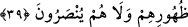
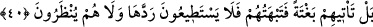

39. İnkâr edenler, yüzlerinden ve sırtlarından (saran) ateşi savamayacakları,
kendilerine yardım dahi edilmeyeceği zamânı bir bilselerdi!
Allah Teâlâ onlara cevaben şöyle buyuruyor: “İnkâr edenler, yüzlerinden ve
sırtlarından (saran) ateşi savamayacakları, kendilerine yardım dahi edilmeyeceği
zamânı bir bilselerdi!” Yâni onlar, “Bu tehdit ne zaman?” diyerek acele ile gelmesini
istedikleri vakti bilselerdi, asla onu acele istemezlerdi. Bu vakit ise üzerlerinden
savmaya muktedir olamayacak ve onu kendilerinden def edecek bir yardımcı da
bulamayacakları şekilde ateşin her yönden onları kuşattığı vakittir.
Burada sâdece “yüzler” ve “sırtlar”, yâni ön ve arka tahsis edilmiştir. Çünkü onlar,
yönler içinde en şereflileridir ve onların kuşatılması her yönden kuşatılmayı gerektirir.
40. Bilâkis kendilerine o (kıyâmet) öyle âni gelir ki, onları şaşırtır. Artık onu ne
reddedebilirler, ne de kendilerine mühlet verilir.
“Bilâkis kendilerine o” tehdid edilen şey “öyle ânî gelir ki, onları şaşırtır.”
İmam (Râzî) şöyle demiştir: “Allah Teâlâ, ölüm ve kıyâmetin vaktini bildirmemiştir.
Çünkü kişi kendisinden gizlenen şeyden daha çok sakınır ve ona daha iyi hazırlanır.”
Büyüklerden birisi şöyle demiştir: “Kimi kevnden bir şey hayrete düşürürse, bu, onun
o şeyle beraber olmasından ve onu var edenden gâfil olmasından dolayıdır. Kim de
Hakk’ın kabzasında ve huzûrunda bulunursa, hiç bir şey onu hayrete düşürmez. Çünkü o,
kudsî menzillerden olan heybet mahalline ulaşmıştır.
“Artık onu,” bu vaat edilen şeyi, yâni azâb, cehennem ateşi ya da kıyâmeti “ne
reddedebilirler, ne de kendilerine mühlet verilir.” Yâni, bir miktar rahat etmeleri için
ya da geriye dönüp de bir takım mazeretler ileri sürmeleri için onlara, göz açıp
kapayıncıya kadar bile mühlet verilmez. Ya da onlara da yakarmalarına da bakılmaz.
Burada işâret vardır ki inkârcılar, Allâh’ın kendilerini inkârlarından ötürü ayrılık,
hasret, uzaklık ve huzûrundan kovma ateşi ile cezalandırmadan önce inkârda karar
kılmazlardı, Hakk’ı talebe tevbe eder ve dönerlerdi. Buradan maksadların en
büyüğünün Hakk’ı taleb ve O’na ulaşmak olduğu anlaşılmaktadır. Kişinin gözünü sağa
sola çevirmekten koruması, zâhir edebinden olduğu gibi; basîretini Allah’tan başkasına
(mâsivâ) bakmaktan koruması da bâtın edebindendir. Bu da çoğunlukla ancak sülûk ve
ehlullahtan irşad talebi ile mümkün olur. Şu halde varlığı ifnâ etmek lâzımdır. Çünkü
maksûda ulaşmanın yolu odur.
Hikâye edilir ki Leyla, Mecnûn Kays’ın kabını kırdığı vakit Mecnûn şevkinden üç gün
raks etti. Ona: “Ey Mecnûn, sen Leylâ’nın seni sevdiğini sanıyordun. Halbuki o,